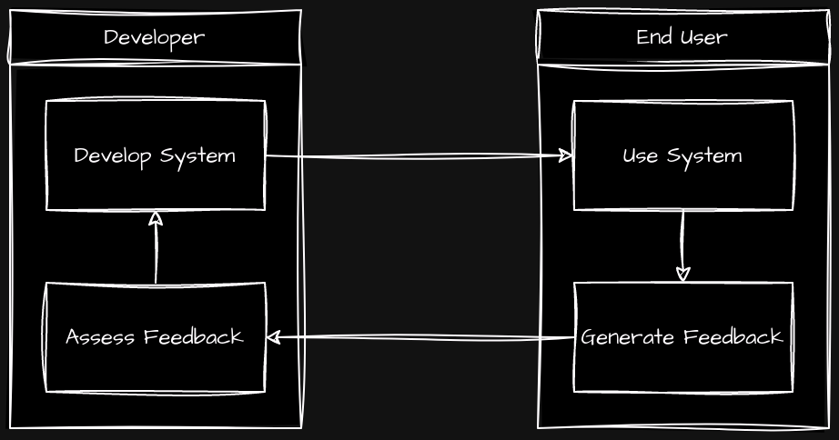
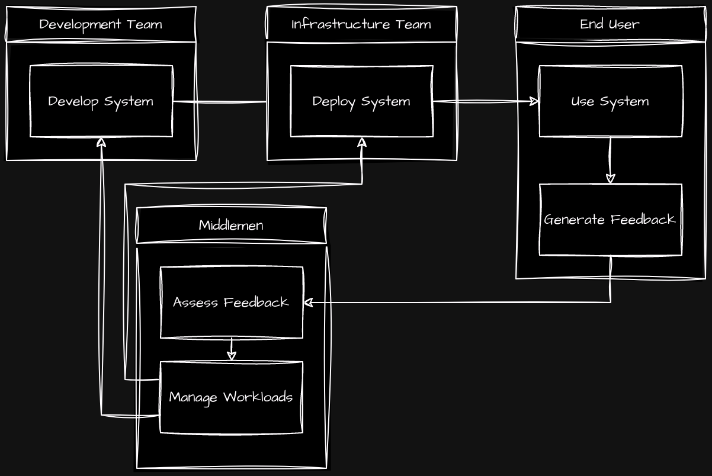
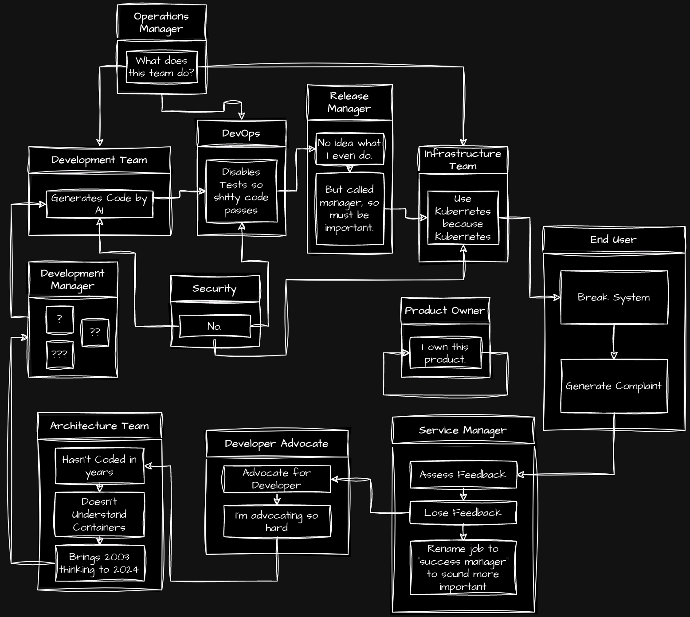

I get frustrated with development at times.
This is the simple development loop:

This is rarely the way it works in reality, though I feel people would be surprised exactly what a one-person dev team can pull off. Just look at Stardew Valley.
This model above is ideal for startups, though as things get more corporate, we start to see things complicate somewhat:

To specify, this is not at all bad. This frees up developers to be developers without forcing them to be "DevOps", allows the infrastructure team to run infrastructure without being forced to develop code, and pushes dealing with end users out to people who are not qualified to do the first two.
This is a good system, where everyone gets to do what they want.
The problem we face is a very human problem. People want jobs. People know that technology jobs pay highly, and want to get into technology jobs despite perhaps not having the best technical ability. Or any technical ability at all. We end up with the bloat of the middleman.
As Malcolm Reynolds said, "Eliminating the middleman is never as simple as it sounds. [...] 'Bout 50% of the human race is middlemen, and they don't take kindly to being eliminated."
This is what we end up with:

Corporate bloat gone insane. People inventing jobs for themselves because they want the high paying tech position without any of the understanding, education, interest, etc.
You can identify one of these people when you get into meetings with them due to their tendency to use many words to say nothing at all. Uncomfortable silence rattles their brains and forces their mouths to work.